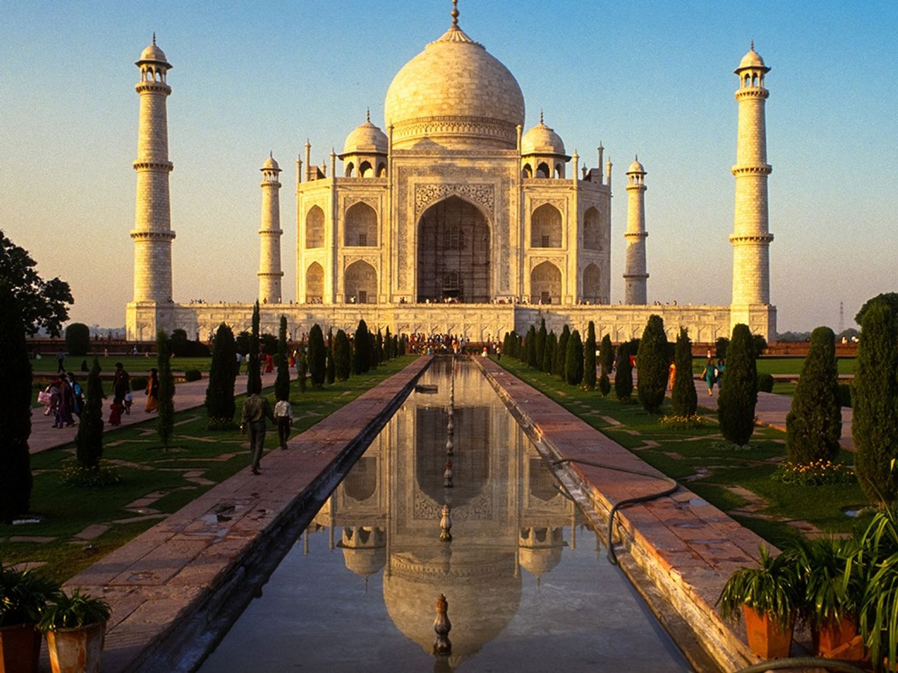

El Taj Majal es un monumento muy famoso de la India. Conocido por su belleza y su arquitectura.

Se encuentra en la ciudad de Agra, en la India, cerca del río Yamuna
Su construcción comenzó en 1632 y terminó aproximadamente en 1653.
Está construido principalmente con mármol blanco y decorado con piedras de distintos colores.
Representa el amor y el recuerdo del emperador Shah Jahan hacia su esposa Mumtaz Mahal.
Fue construido como mausoleo, es decir,un edificio destinado a conservar los restos de una persona fallecida.